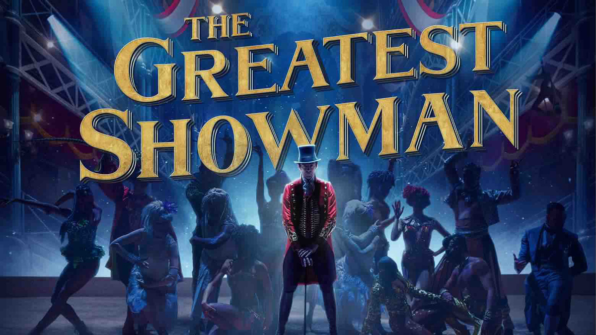
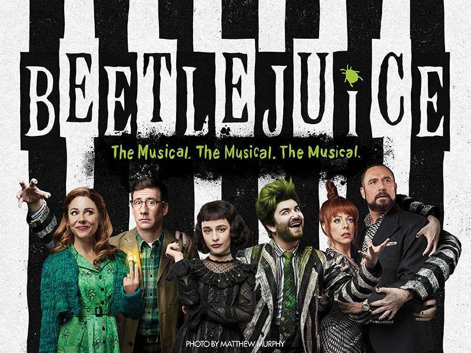
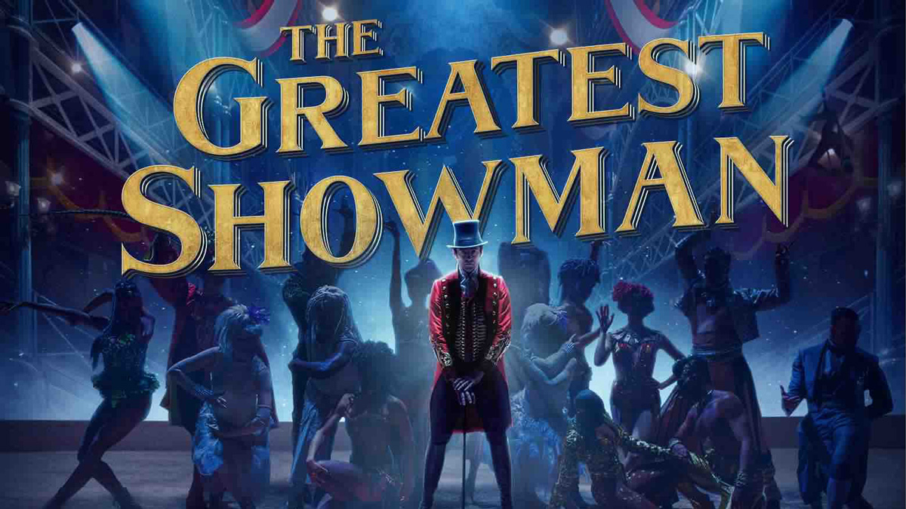
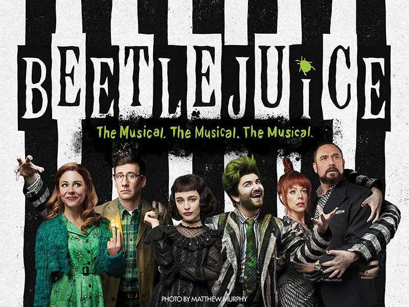

GUSTOS GENERALES
Mi nombre es Danna y creo que después de esa gran introducción sobre un tema que me interesa, es momento de hablar de que otras cosas me hacen feliz.
De forma general me gustan demasiado los temas que tienen que ver con la pintura o música, creo que es algo lindo. Esto lo creo porque la música y el arte es una forma increíble de poder expresar todos los sentimientos que se acumulan en el alma. De igual manera, me interesa conocer temas nuevos sobre aquello que nos rodea y creo que es porque me mantengo curiosa ante todo lo que pase a mi alrededor, es por ello que de manera resumida dejaré otros de mis gustos más personales aquí:
- Videojuegos
- Música
- Natación
- Series y Películas
Como anteriormente ya hablé de dinosaurios, pues me saltaré ese tema en esta página ¡Empecemos con Videojuegos!


 


